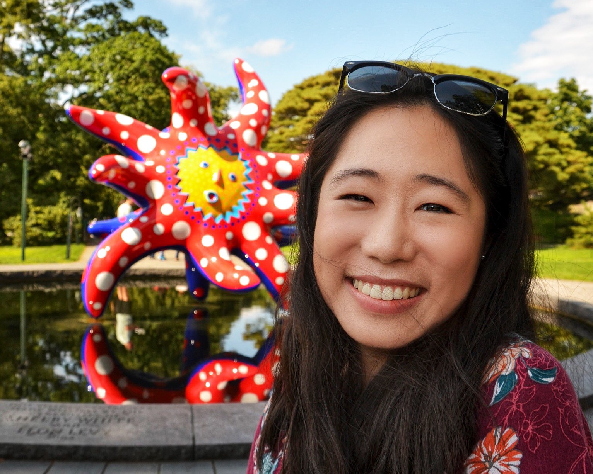

I'm Lucy Jiang (she/her), a graduating senior in the Interdisciplinary and College Honors program at the University of Washington. I am studying Computer Science and Entrepreneurship, with a focus on accessibility. Over the last four years, I have discovered and developed my passion for designing and building sustainable, scalable, and empathy-driven accessibility solutions. In my free time, I love baking, walking, inline skating, and exploring the PNW!
Join me as I take you through my time at UW! ✨
